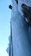
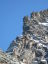
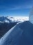
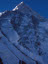

|  |
Mélykék jégesés [www.excelsior.hu, 2009. feb.]
Deepest Blue WI6- 150m, Erlaufboden. |
|  |
Lion-Hörnli
traverz [www.excelsior.hu, 2008. okt.]
Az Afrikai kőzetlemez félszigetszerűen kinyúló része, az Apuliai lemez a krétakorban tört le, majd egy kontinentális ütközés során 50 millió éve kerültek darabjai az alábukó Európai lemez fölé. Legnevezetesebb darabkája, a Matterhorn ilyenformán Afrika 13. legmagasabb hegye, megelőzve a szomszédos Dent Blanche-t és az ugandai Wagagai-t. |
|  |
Huascarán, Huayna Potosi és egyéb kalAndok Hegymászó 2003 (MHSSz, 2004) 52-62; Mount Everest IV.évf. 1.sz. (2004) 20-24. |
 |
Egek Ura Hegymászó 2005 (MHSSz, 2006) 88-94; Sportpiac II.évf. 6.sz (2005) 56-59. |
Karakoram 2007 — G1 Hegyvilág I.évf. 2.sz. (2008) 10-13. |
Tudomány, hit, manipuláció [PDF], Magyar Tudomány 167 (2007/4) 536-541; hosszabb változat [HTML]